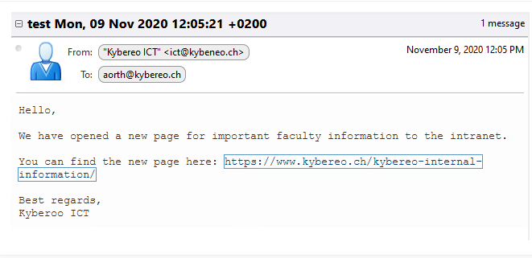
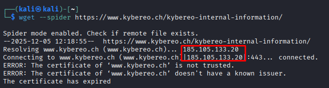
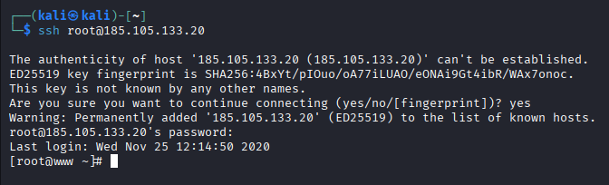
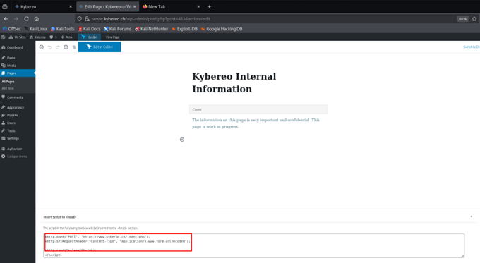
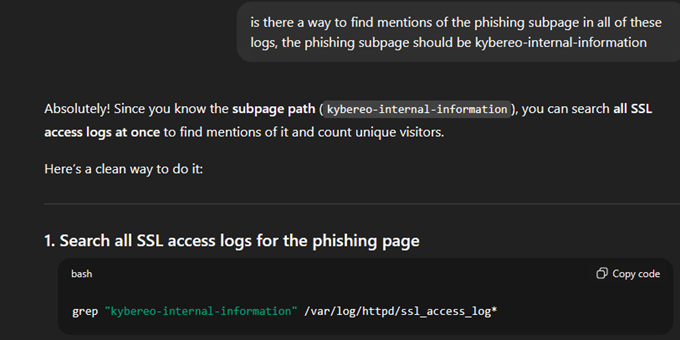
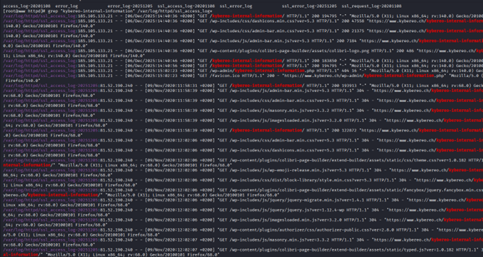
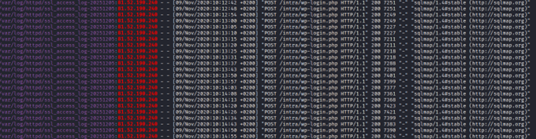
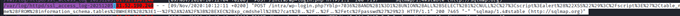
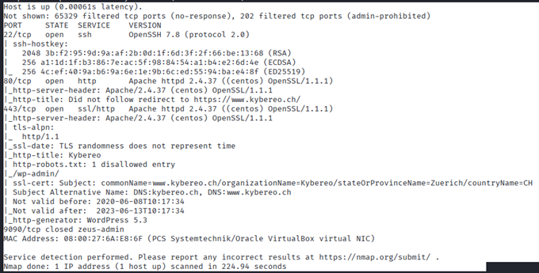

▄▀ I N T R O D U C T I O N ▄▀
This cybersecurity challenge was originally one of my university
assignments. Since I found it both interesting and fun, I decided
to upload a polished version of my writeup here because why not...
The challenge was created as public material by a Finnish university
for students to try out. The goal was to uncover how was the system
compromised and what had been done. Another part was answering some
related questions...Some pictures have terrible resolution, sorry
about that. Link: https://cs4e.pages.labranet.jamk.fi/ooc/
───────────────────────────────────────────────────────────────
▄▀ S E T U P ▄▀
I downloaded and prepared the testing VM, set up the network
bridge with Kali and checked the Kybereo webpage. Everything
worked correctly, so I was ready to start. The only thing that
I had was the webpage, suspicious email, some logins and the
network scheme picture. Let's start with the email:

───────────────────────────────────────────────────────────────
▄▀ P H I S H I N G I D E N T I F I C A T I O N ▄▀
How can you identify whether the email message is a phishing
attempt? What indicators suggest this?
First indicator that I found is also probably the most obvious
one, and it's the sender's email address, where there is a
"typo". Since we know that it's a phishing email, the typo is
deliberate, and the attackers used that address on purpose to
catch unprepared Kybereo employee. Then also at the end of the
email, there is "Kyberoo" instead of Kybereo - difficult to
say if its intended typo or not, it's a redflag nonetheless.
───────────────────────────────────────────────────────────────
▄▀ P H I S H I N G W E B S I T E L O C A T I O N ▄▀
Where is the phishing website mentioned in the email hosted?
Now Kali comes into play. We need to get some info about that
URL, ideally in the safest way possible. I will use spider
mode, so it will only check some basic info about the page and
not download anything:

Well, it seems that this IP confirms that it's hosted on that
VM, that was provided in the exercise. How "surprising".
───────────────────────────────────────────────────────────────
▄▀ C R E D E N T I A L S T O R A G E ▄▀
Where do the credentials entered on the phishing website end up?
Since now we know where the website is hosted, we should find
out where the credentials are. I suspect that they will be
either stored somewhere there on the server, or they will be
sent to some remote database. Since I know the IP and login
credentials to the other VM, I can SSH there.

Before proceeding with the search, I pressed Up arrow key and
found all the commands that the previous visitor did on the
server. And the person hasn't deleted history, so I saved it
all for later. After some searching, I finally found the page
in WordPress, initially I was basically searching in the
'dashboard pages', and not in 'my pages' section...

So, to answer the question, the credentials will end up at the
attacker's phishing address "https://www.kyberoo.ch/index.php"
───────────────────────────────────────────────────────────────
▄▀ U S E R A N A L Y S I S ▄▀
How many users visited the phishing website? (ssl_access_logs)
This one should be straight forward. I searched where to find
the SSL access logs, then SSH'd into the other machine and
tried to check them out. There were multiple of these logs, so
I was searching for something related to the phishing subpage.

I went through some of these logs manually and found mentions
of the phishing subpage. Since there were a lot of these
mentions and multiple IPs, I filtered for logs mentioning the
phishing site:

So, I tried the search and it worked, nice.

Now the IPs - the first one mentioned is ours, so that doesn't
count, but there were still some more:
* 81.52.190.240
* 10.10.100.11 - internal address
* 10.10.100.10 - internal address
So, to answer the questions, maybe 3, maybe 2, since it's hard
to tell with 2 internal addresses. At least 1 is for sure
public and foreign to us.
───────────────────────────────────────────────────────────────
▄▀ A T T A C K M E T H O D S ▄▀
How did the attacker perform the malicious actions?
(ssl_access_logs)
Since now we know which may be the attacker's IP (81.52.190.240),
I can just check what was done from the said IP: 'grep
"^81.52.190.240" /var/log/httpd/ssl_access_log*'. Well, there
was a lot of stuff. It took some time to go through the logs.
The obvious thing visible on the first site was port scanning
with sqlmap tool, which indicates that the attacker was
preparing for SQL injection:

And there was also an attempt to inject:
/var/log/httpd/ssl_access_log-20251205:81.52.190.240 - -
[09/Nov/2020:10:12:11 +0200] "POST /intra/wp-login.php?Yblp=
7036%2BAND%2B1%3D1%2BUNION%2BALL%2BSELECT%2B1%2CNULL%2C%27%3C
script%3Ealert%28%22XSS%22%29%3C%2Fscript%3E%27%2Ctable_name
%2BFROM%2Binformation_schema.tables%2BWHERE%2B2%3E1--%2F%2A%2A
%2F%3B%2BEXEC%2Bxp_cmdshell%28%27cat%2B..%2F..%2F..%2Fetc%2F
passwd%27%29%23 HTTP/1.1" 200 7465 "-" "sqlmap/1.4#stable
(http://sqlmap.org)"

───────────────────────────────────────────────────────────────
▄▀ V U L N E R A B I L I T I E S ▄▀
What vulnerabilities or misconfigurations enabled the attacker's
actions? (nmap, nikto scans)
Let's start with nmap scan:

We see some outdated stuff, like old WordPress, expired SSL
certificate... Ports have standard configurations. Nikto scan
didn't find anything for some reason, not sure why, most likely
because of the Kali network setup for this assignment, since
it's not able to connect to the internet... But let's focus on
what happened - the SQL injection. That was made possible, but
there were no request limits, and that wp-admin page was
publicly available, also some plugin vulnerability may have
helped.
───────────────────────────────────────────────────────────────
▄▀ I N V E S T I G A T I O N P R O C E S S ▄▀
Since there was already a lot of information about the attack,
the investigation process had a bit different timeline than it
would normally have. I started with the initial hint, the
phishing email and continued with checking the phishing link.
Then I went through the attacked servers, history of commands
that the attacker made. Then I checked the WordPress backend
for any suspicious activity, like weird pages, plugins or
misconfigurations. I continued checking logs, which were not
deleted by attacker, for some more information. At the end I
did some scans by myself (mostly nmap, nikto and wpscan didn't
work) to confirm or find new vulnerabilities.
───────────────────────────────────────────────────────────────
▄▀ A T T A C K P A T H ▄▀
Attackers most likely found public wp login page. Then started
testing if the login form is injectable, then continued testing
with sqlmap and tried remote code execution with the SQL payload
mentioned a few questions above. Then he went through the files.
───────────────────────────────────────────────────────────────
▄▀ M A I N T H R E A T S ▄▀
The primary threat is that the attackers were able to perform
the SQL injection, which means that the site had some security
issues. Attackers could have stolen data, deleted the pages and
similar malicious stuff.
───────────────────────────────────────────────────────────────
▄▀ C R I T I C A L V U L N E R A B I L I T I E S ▄▀
Since the site is not public and made for the assignment, the
vulnerability list is only theoretical. Since most of the tools
didn't work, I can only repeat what I found before: old
WordPress version, old Apache version, no request limits,
unupdated WordPress plugins, "public" (according to the
assignment) access to the wp login, expired SSL certificate.
───────────────────────────────────────────────────────────────
▄▀ R E F L E C T I O N ▄▀
I enjoyed the first parts of the exercise, since they were done
in a CTF-like style. It was something a bit different than the
last CTF, it was also way easier to progress, and it also
required a bit different skillset, it was more basic. Because
of the setup, the pentesting tools didn't work (or I just had
wrong setup, I have no idea), so it was kind of pointless to
keep trying them and answering questions related to them, when
most of the stuff should be found from the assignment itself.
At the end of the day, I enjoyed this exercise, it was a nice
change after the Nixu challenges.
───────────────────────────────────────────────────────────────
▄▀ G R E E T I N G S ▄▀
To everyone reading this.
Have a nice day!
───────────────────────────────────────────────────────────────
"Still sane, exile?"
───────────────────────────────────────────────────────────────